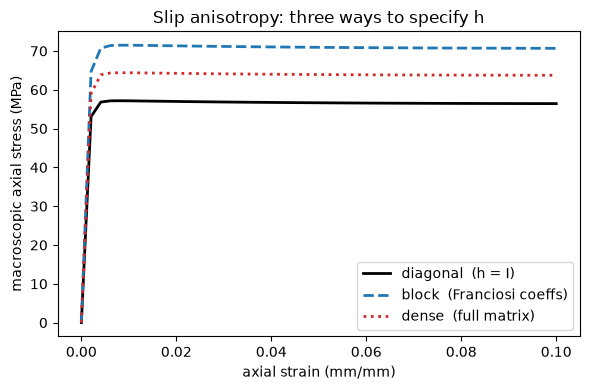
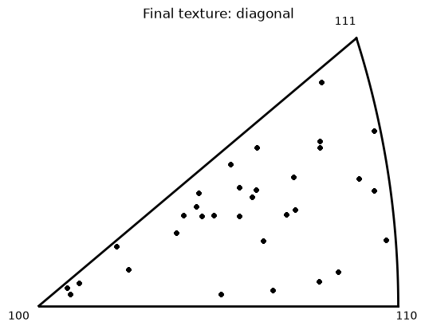
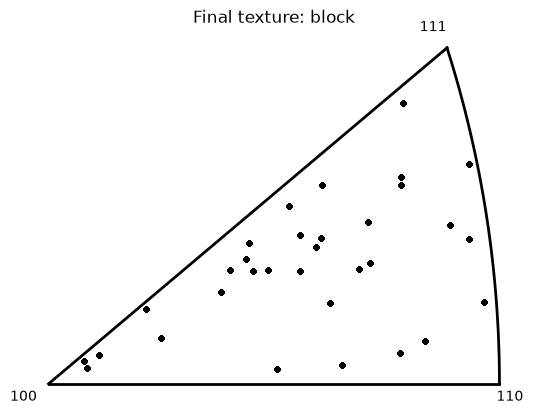
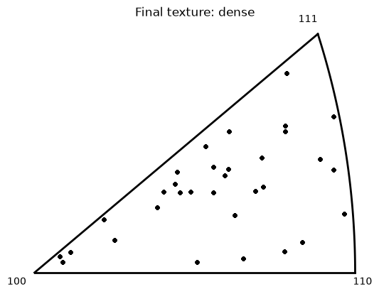

Slip anisotropy: specifying the interaction matrix three ways#
What is slip anisotropy?#
A crystal deforms plastically by dislocation glide on discrete slip systems. As dislocations multiply they obstruct one another, and a slip system’s strength rises with the dislocation content a moving dislocation must cut through — forest hardening. Slip anisotropy is the fact that this obstruction is directional: dislocations on one system do not harden every other system equally. A dislocation on system \(r\) might barely impede a coplanar system yet strongly pin a system it forms a sessile junction with.
The latent-hardening matrix#
That directionality is carried by an \(n_\text{slip}\times n_\text{slip}\) interaction (latent-hardening) matrix \(h\): the entry \(h_{ir}\) is how much the dislocation density \(\rho_r\) on system \(r\) contributes to the forest hardening of system \(i\). The diagonal \(h_{ii}\) is self-hardening; the off-diagonals are latent hardening — system \(i\) strengthened by activity on other systems. The forest density seen by system \(i\) is the weighted sum \(\sum_r h_{ir}\rho_r\), and the slip strength follows the Taylor relation
With \(h=I\) every system hardens only itself (the isotropic, self-hardening baseline); a non-identity \(h\) is what makes hardening anisotropic. Physically the off-diagonals fall into a few interaction categories (self, coplanar, collinear, glissile junction, Hirth lock, Lomer–Cottrell sessile), so \(h\) is built from a handful of coefficients rather than \(n^2\) free numbers.
How it works in crystal plasticity#
In a crystal-plasticity model each material point carries a per-slip state (here a dislocation density) that evolves as the systems slip. Within a step the stress gives the resolved shears, the strength map above turns the per-slip state through \(h\) into per-system strengths \(\tau_i\), the slip rule turns resolved shear and strength into slip rates, and those rates drive the plastic deformation and the lattice reorientation. So \(h\) couples all slip systems at a point: activity on one system raises the strength of the systems it interacts with, changing which systems slip next — and hence the stress response and the developing texture. The full derivation, the matrix-construction menu, and an annotated \(n\times n\) illustration are on the crystal-plasticity module page under Latent (slip-system interaction) hardening.
This example#
The runnable companion below drives the same FCC model (with reorientation) three ways, differing only in how \(h\) is supplied, and overlays the macroscopic stress–strain response and the final texture:
Diagonal (\(h=I\)) — pure self-hardening via DislocationObstacleStrengthMap; the baseline, no matrix.
Block — a few physical coefficients mapped onto \(h\) by a slip-family partition, via SquareMatrix
fill = block.Dense — the full matrix given explicitly with
fill = dense.
import sys
if "google.colab" in sys.modules:
!pip install -q neml2
Setup#
A batch of randomly-oriented grains deformed under a prescribed uniaxial deformation-rate history. Each grain integrates its elastic strain, orientation, and per-slip dislocation density; we read the per-grain Cauchy stress (averaged for a macroscopic curve) and the final orientations (texture).
import matplotlib.pyplot as plt
import torch
import neml2
import neml2.types
import neml2.texture as texture
torch.manual_seed(0)
torch.set_default_dtype(torch.float64)
device = torch.device("cuda" if torch.cuda.is_available() else "cpu")
torch.set_default_device(device)
NGRAINS = 32
NTIME = 50
NSLIP = 12
RATE = 1.0e-3
MAX_STRAIN = 0.1
AXIAL = 2
INIT_RHO = 10.0
END_T = MAX_STRAIN / RATE
def random_orientations(ngrains):
g = torch.randn(ngrains, 3, 3)
q, r = torch.linalg.qr(g)
q = q * torch.sign(torch.diagonal(r, dim1=-2, dim2=-1)).unsqueeze(-2)
q[:, :, 0] = q[:, :, 0] * torch.linalg.det(q).unsqueeze(-1)
return neml2.types.MRP.from_matrix(neml2.types.R2(q, 1))
orientations = random_orientations(NGRAINS)
strain = torch.linspace(0.0, MAX_STRAIN, NTIME)
Three interaction matrices#
The three variants differ only in the strength leaf (and, for the latter two,
an hmat tensor). Everything else — geometry, slip rule, dislocation-density
evolution, integrators, solve — is shared.
fill = blockwithblocks = '3 3 3 3'treats the 12 slip systems as four families of three and sets one coefficient per family pair:1.0on the diagonal (self) and0.4off-diagonal (latent).fill = densegives the full \(12\times12\) matrix, here \(I + 0.2\,(J-I)\), generated in Python to keep the cell readable.
DIAG_STRENGTH = """ [slip_strength]
type = DislocationObstacleStrengthMap
dislocation_density = 'dislocation_density'
alpha = 0.3
mu = 1.0e5
b = 1.0e-4
constant_strength = 50.0
[]"""
BLOCK_HMAT = """ [hmat]
type = SquareMatrix
fill = block
blocks = '3 3 3 3'
data = '1.0 0.4 0.4 0.4 0.4 1.0 0.4 0.4 0.4 0.4 1.0 0.4 0.4 0.4 0.4 1.0'
[]"""
_dense = (torch.eye(NSLIP) + 0.2 * (1.0 - torch.eye(NSLIP))).flatten().tolist()
_dense_str = " ".join(repr(round(v, 3)) for v in _dense)
DENSE_HMAT = f""" [hmat]
type = SquareMatrix
m = 12
fill = dense
data = '{_dense_str}'
[]"""
INTERACTION_STRENGTH = """ [slip_strength]
type = DislocationInteractionStrengthMap
dislocation_density = 'dislocation_density'
interaction_matrix = 'hmat'
alpha = 0.3
mu = 1.0e5
b = 1.0e-4
constant_strength = 50.0
[]"""
Build and run the three models#
Each variant is written to its own input file and driven by a TransientDriver.
ori_literal = repr(orientations.data.detach().cpu().tolist())
def build_model(variant):
if variant == "diagonal":
hmat_block, strength = "", DIAG_STRENGTH
elif variant == "block":
hmat_block, strength = BLOCK_HMAT + "\n", INTERACTION_STRENGTH
else:
hmat_block, strength = DENSE_HMAT + "\n", INTERACTION_STRENGTH
return f"""
[Tensors]
[sdirs]
type = Python
expr = 'MillerIndex(torch.tensor([1, 1, 0], dtype=torch.int64))'
[]
[splanes]
type = Python
expr = 'MillerIndex(torch.tensor([1, 1, 1], dtype=torch.int64))'
[]
{hmat_block} [times]
type = Python
expr = 'Scalar(torch.linspace(0.0, {END_T}, {NTIME}, dtype=torch.float64).reshape({NTIME}, 1))'
[]
[drate]
type = Python
expr = 'SR2.fill({-RATE / 2}, {-RATE / 2}, {RATE}, 0, 0, 0).dynamic_batch.expand({NTIME}, {NGRAINS})'
[]
[vort]
type = Python
expr = 'WR2(torch.zeros({NTIME}, {NGRAINS}, 3, dtype=torch.float64))'
[]
[ic_ori]
type = Python
expr = 'MRP(torch.tensor({ori_literal}, dtype=torch.float64), sub_batch_ndim=1).sub_batch.retag(1)'
[]
[ic_es]
type = Python
expr = 'SR2(torch.zeros({NGRAINS}, 6, dtype=torch.float64), sub_batch_ndim=1).sub_batch.retag(1)'
[]
[ic_rho]
type = Python
expr = 'Scalar(torch.full(({NGRAINS}, {NSLIP}), {INIT_RHO}, dtype=torch.float64), sub_batch_ndim=2).sub_batch.retag(2)'
[]
[]
[Data]
[crystal_geometry]
type = CubicCrystal
lattice_parameter = 1
slip_directions = 'sdirs'
slip_planes = 'splanes'
[]
[]
[Drivers]
[driver]
type = TransientDriver
model = 'model'
prescribed_time = 'times'
prescribed_SR2_names = 'deformation_rate'
prescribed_SR2_values = 'drate'
prescribed_WR2_names = 'vorticity'
prescribed_WR2_values = 'vort'
ic_MRP_names = 'orientation'
ic_MRP_values = 'ic_ori'
ic_SR2_names = 'elastic_strain'
ic_SR2_values = 'ic_es'
ic_Scalar_names = 'dislocation_density'
ic_Scalar_values = 'ic_rho'
[]
[]
[Models]
[euler_rodrigues]
type = RotationMatrix
from = 'orientation'
to = 'orientation_matrix'
[]
[elasticity]
type = LinearIsotropicElasticity
coefficients = '1e5 0.25'
coefficient_types = 'YOUNGS_MODULUS POISSONS_RATIO'
strain = 'elastic_strain'
stress = 'cauchy_stress'
[]
[resolved_shear]
type = ResolvedShear
stress = 'cauchy_stress'
[]
[elastic_stretch]
type = ElasticStrainRate
[]
[plastic_spin]
type = PlasticVorticity
[]
[plastic_deformation_rate]
type = PlasticDeformationRate
[]
[orientation_rate]
type = OrientationRate
[]
[slip_rule]
type = PowerLawSlipRule
n = 8.0
gamma0 = 2.0e-1
[]
{strength}
[dislocation_density_rate]
type = PerSlipForestDislocationEvolution
dislocation_density = 'dislocation_density'
k1 = 1e2
k2 = 40.0
[]
[integrate_dislocation_density]
type = ScalarBackwardEulerTimeIntegration
variable = 'dislocation_density'
[]
[integrate_elastic_strain]
type = SR2BackwardEulerTimeIntegration
variable = 'elastic_strain'
[]
[integrate_orientation]
type = WR2ImplicitExponentialTimeIntegration
variable = 'orientation'
[]
[implicit_rate]
type = ComposedModel
models = 'euler_rodrigues elasticity orientation_rate resolved_shear
elastic_stretch plastic_deformation_rate plastic_spin
slip_rule slip_strength dislocation_density_rate
integrate_dislocation_density integrate_elastic_strain integrate_orientation'
[]
[]
[EquationSystems]
[es]
type = NonlinearSystem
model = 'implicit_rate'
unknowns = 'elastic_strain orientation dislocation_density'
residuals = 'elastic_strain_residual orientation_residual dislocation_density_residual'
[]
[]
[Solvers]
[newton]
type = NewtonWithLineSearch
max_linesearch_iterations = 5
linear_solver = 'lu'
[]
[lu]
type = DenseLU
[]
[]
[Models]
[cp_warmup_1]
type = CrystalPlasticityStrainPredictor
scale = 0.1
[]
[cp_warmup_2]
type = ConstantExtrapolationPredictor
unknowns_MRP = 'orientation'
unknowns_Scalar = 'dislocation_density'
[]
[predictor]
type = ComposedModel
models = 'cp_warmup_1 cp_warmup_2'
[]
[update]
type = ImplicitUpdate
equation_system = 'es'
solver = 'newton'
predictor = 'predictor'
[]
[model]
type = ComposedModel
models = 'update elasticity'
additional_outputs = 'elastic_strain cauchy_stress'
[]
[]
"""
results = {}
for variant in ["diagonal", "block", "dense"]:
path = f"model_{variant}.i"
with open(path, "w") as fh:
fh.write(build_model(variant))
driver = neml2.load_input(path).get_driver("driver")
driver.run()
res = driver.result()
nsteps = driver.nsteps
macro = [0.0] + [
float(res[f"output.{i}.cauchy_stress"].reshape(-1, 6)[:, AXIAL].mean())
for i in range(1, nsteps)
]
final_ori = neml2.types.MRP(res[f"output.{nsteps - 1}.orientation"].reshape(-1, 3).detach())
results[variant] = (torch.tensor(macro), final_ori)
print(f"{variant:9s}: peak macro axial stress = {max(macro):.2f} MPa")
/home/tranh/miniconda3/envs/moose-src/lib/python3.13/site-packages/torch/utils/_device.py:122: UserWarning: Converting a tensor with requires_grad=True to a scalar may lead to unexpected behavior.
Consider using tensor.detach() first. (Triggered internally at /pytorch/torch/csrc/autograd/generated/python_variable_methods.cpp:838.)
return func(*args, **kwargs)
diagonal : peak macro axial stress = 57.18 MPa
block : peak macro axial stress = 71.49 MPa
dense : peak macro axial stress = 64.39 MPa
Macroscopic stress–strain#
Latent hardening raises the aggregate flow stress relative to pure self-hardening: a dislocation on one system now also hardens the others.
s = strain.detach().cpu().numpy()
fig, ax = plt.subplots(figsize=(6, 4))
styles = {
"diagonal": ("k-", "diagonal (h = I)"),
"block": ("C0--", "block (Franciosi coeffs)"),
"dense": ("C3:", "dense (full matrix)"),
}
for variant, (style, label) in styles.items():
ax.plot(s, results[variant][0].detach().cpu().numpy(), style, lw=2, label=label)
ax.set_xlabel("axial strain (mm/mm)")
ax.set_ylabel("macroscopic axial stress (MPa)")
ax.set_title("Slip anisotropy: three ways to specify h")
ax.legend()
fig.tight_layout()

Final texture#
The three runs develop nearly the same deformation texture (inverse pole figures along the loading direction) — which is expected and correct. Lattice reorientation is governed by which slip systems carry the deformation (the slip geometry and resolved shears), and that is common to all three runs. The interaction matrix changes each system’s hardening magnitude, not the slip directions, so it barely shifts the texture at this strain; the discriminating observable here is the stress–strain curve above. This is also why calibrating \(h\) from texture alone is ill-posed — see the identifiability note on the crystal-plasticity module page.
loading = torch.tensor([0.0, 0.0, 1.0], device=device)
for variant in ["diagonal", "block", "dense"]:
texture.pretty_plot_inverse_pole_figure(results[variant][1], loading, crystal_symmetry="432")
plt.title(f"Final texture: {variant}")



See also#
Crystal plasticity — the crystal-plasticity module page: the latent-hardening theory, the matrix-construction menu, and the annotated \(n_\text{slip}\times n_\text{slip}\) illustration.
Models: DislocationObstacleStrengthMap (the diagonal baseline used here), DislocationInteractionStrengthMap, LinearInteractionStrengthMap, and LinearInteractionHardeningRule; plus SquareMatrix, the matrix builder.
Slip-anisotropy calibration — recover the latent-hardening ratio from synthetic stress + per-step texture through the pyzag adjoint.